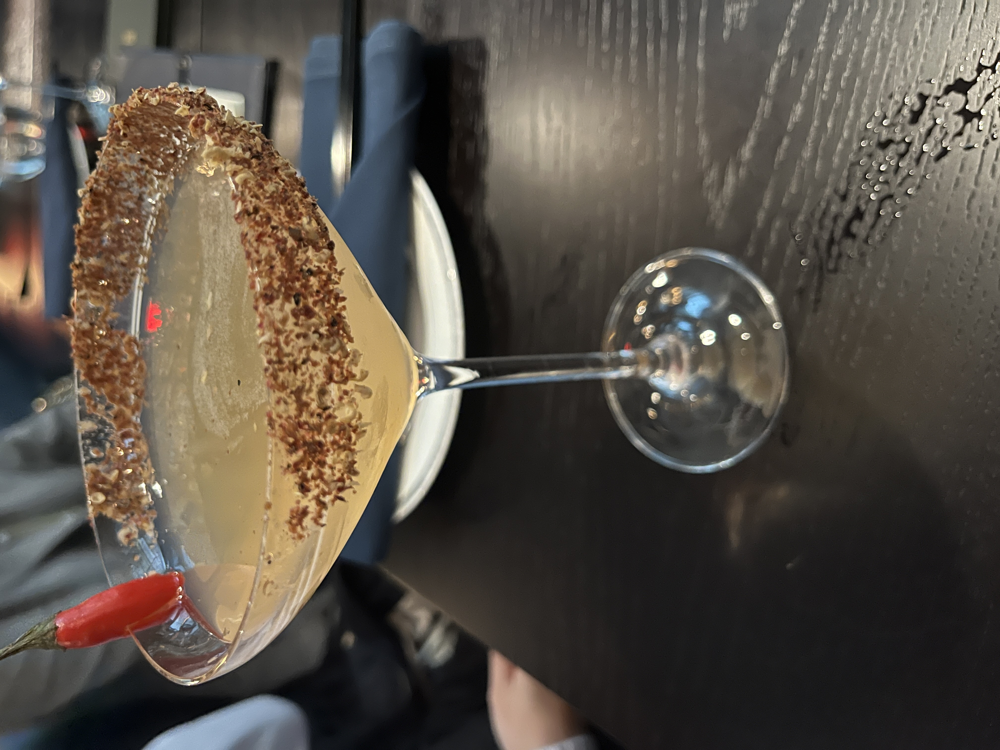
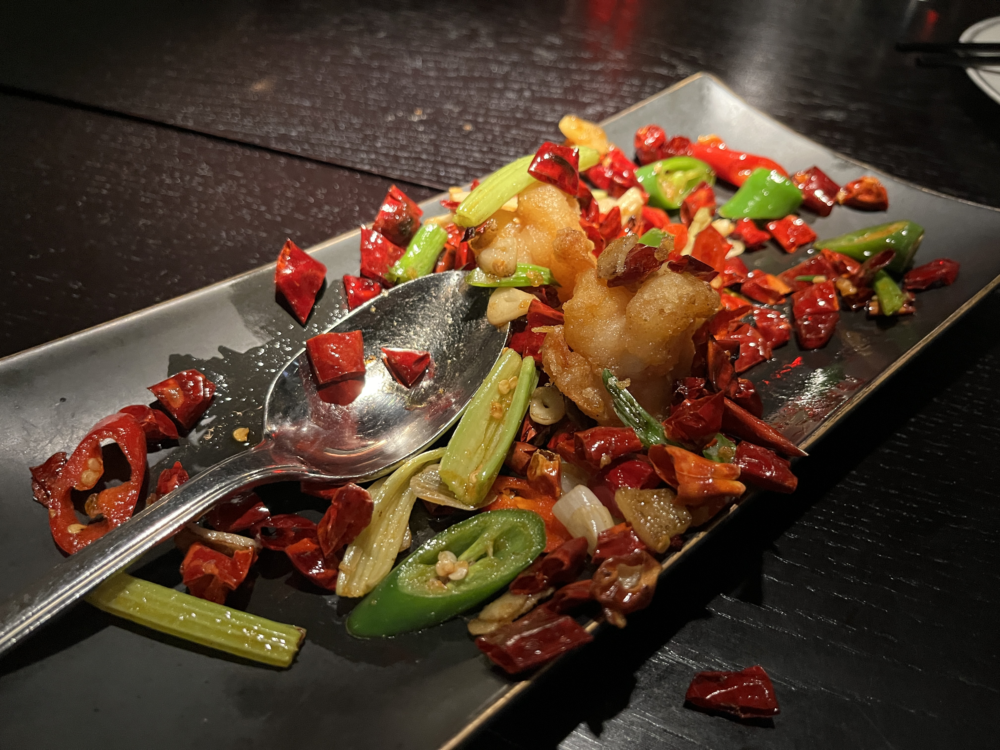
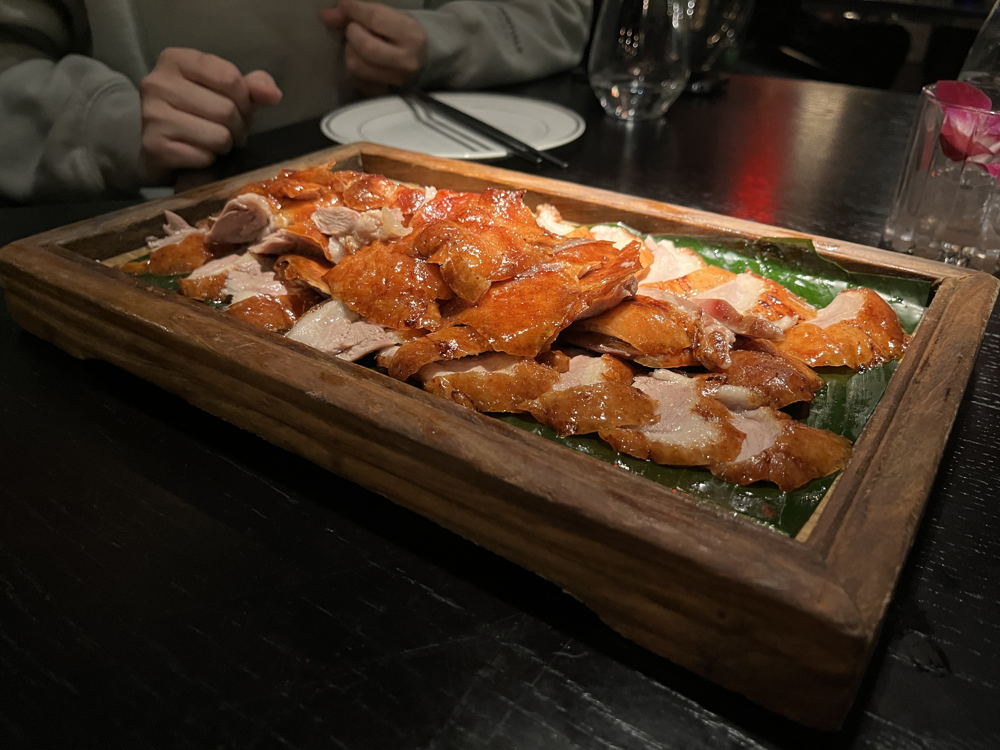
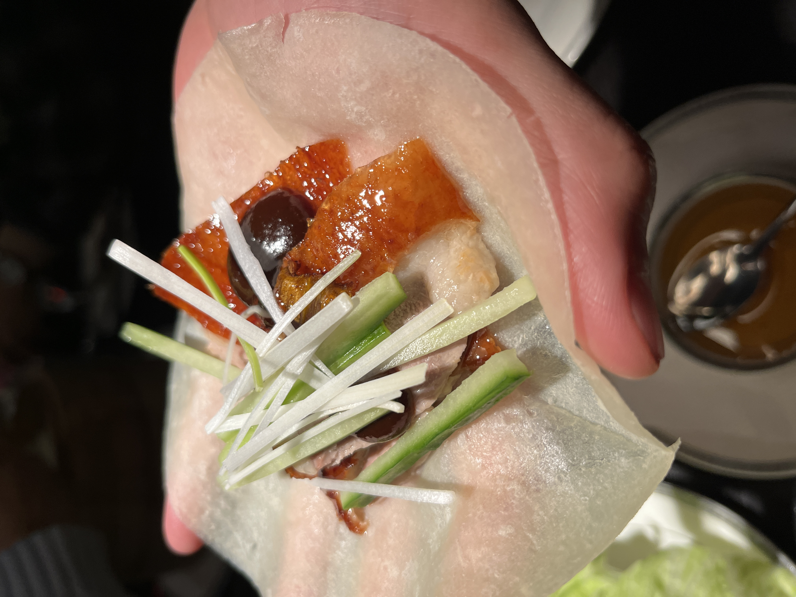

Hutong
Midtown East, New York City
Introduction
People around me are always talking about going to Edison, NJ for authentic Indian and Chinese food. I didn’t have much of a chance to do this pilgrimage before I was diagnosed as gluten-free, and these restaurants rarely mark anything as gluten free.1 Usually, I am okay with this, since I can replicate most dishes on my own, but lately I have wanted to try some Chinese dishes that are hard to cook in a household. Chief among these was Peking duck.
Peking duck faded to the back of my mind until one of my friends mentioned that he had eaten a delicious Peking duck in NYC at a fancy restaurant. Fancy restaurant usually implies awareness of celiac disease, so we called them and discovered they can make the Peking duck gluten-free (sort of, but more on that later). Hence we planned a trip to Hutong.
Everything here was safe to eat and didn’t upset my stomach.
Other Items
Hutong has food besides the Peking duck, and we did order a lot of other starters and sides.



The cocktails were generally lighter on alcohol and didn’t particularly stick out as unique concoctions. The asparagus was delicious, though it had so few ingredients and was so simple that I couldn’t help but think I could have made it at home for a fraction of the cost.2 The prawns were the highlight of the whole meal for me. They were so crispy and flavorful: the classic deep-fried grease hit at the same time as the spice with perfect balance. The batter wasn’t as light as rice flour or as heavy as chickpea flour, so I was convinced there was flour in the breading (which was not true)! I don’t really get the trend of Chinese food putting a bunch of peppers on the plate that shouldn’t be eaten. I ate one of these and kind of regretted it.
The pictures are just a sampling of what we ordered, since we had a large group. We also tried the duck fried rice, which had a disappointingly low ratio of meat to rice, and others at the table ordered some gluten-filled dim sum items.
Peking Duck
The duck arrives in two phases: the first is the desirable parts of the duck cooked on their own, and the second is the less desirable parts minced up and stir fried with green beans and some sauce. This was where the first disappointment hit: the second phase is not gluten-free and they pre-mix the sauce so it’s impossible to make gluten-free. This was surprising to me: on the phone they seemed to suggest that the gluten-free Peking duck experience would not be compromised at all (which would make sense, since the duck is just cooked in a special way and served with some simple sides). Also, what kind of fancy restaurant can’t re-mix a sauce? But we went all the way to New York so I acted like it didn’t matter.

When they put it on the table, the duck looked pretty exciting. It was a little alarming that they gave this for 3 people and I could only eat this phase, but luckily others at the table were nice and let me have more than my fair share. Once again, the waiter delivered some disappointing news: I couldn’t have any of the sides or the pancakes with the duck, not even the hoisin sauce3. They provided me some sad lettuce pieces that I could use to wrap the duck myself and gave honey on the side.

Unsurprisingly, the little green veggie sticks and the hoisin sauce are crucial to the Peking duck experience. Without them, there’s no balance to the rich, fatty duck. I was only able to eat a few pieces before I felt it was too greasy. I tried to eat the coveted crispy skin with the provided honey, and it was just too decadent to enjoy.
For what it’s worth, the second phase of the duck looked pretty lame. Everyone at the table said it was not as good as the first phase (which they might have said just to make me feel better). Overall, it seems that the gluten-free Peking duck experience was a bit of a letdown…time to find another place!
-
It’s worth noting that most Indian food is gluten-free except for the ingredient asafoetida, also known as hing. And this spice does not contain gluten on its own, but it is usually processed with a bit of flour to make it easier to grind up. Hing is not ubiquitous in Indian cuisine, but I still worry about cross-contamination. ↩
-
Sadly I have this thought a lot. ↩
-
Ok, maybe this is not very surprising, but I assumed when they said they had a gluten-free offering of the duck, they had gluten-free hoisin sauce. It’s fairly common and easy to find. ↩